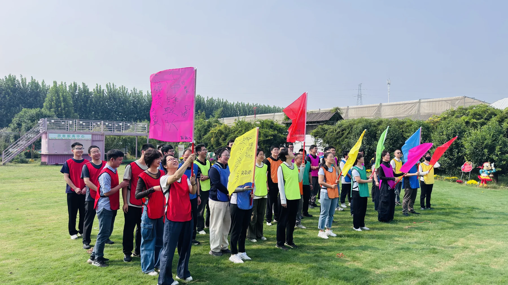
01
团队 · 组织
组织和公司团建
走出会议室，把团队放进草地、花房和游戏场。农场可承接企业、协会、社群及各类组织活动，安排拔河、一圈到底、小鸡下蛋、毛毛虫大战等协作项目，也能把植物课程、聚餐和自由游园组合成完整的一日方案。大家在真实任务中分工、配合、打破生疏感，让团建不只热闹，更能留下共同经历。
查看团建与导师费用 →ZHENGZHOU · XINGYANG · SINCE 2003
一个可以
吃花喝花玩花
的地方
把园艺、自然课堂、田园游乐和热气腾腾的农家饭，装进一天的轻松时光。家庭、学校、企业、组织团队和老朋友，都能找到适合自己的玩法。
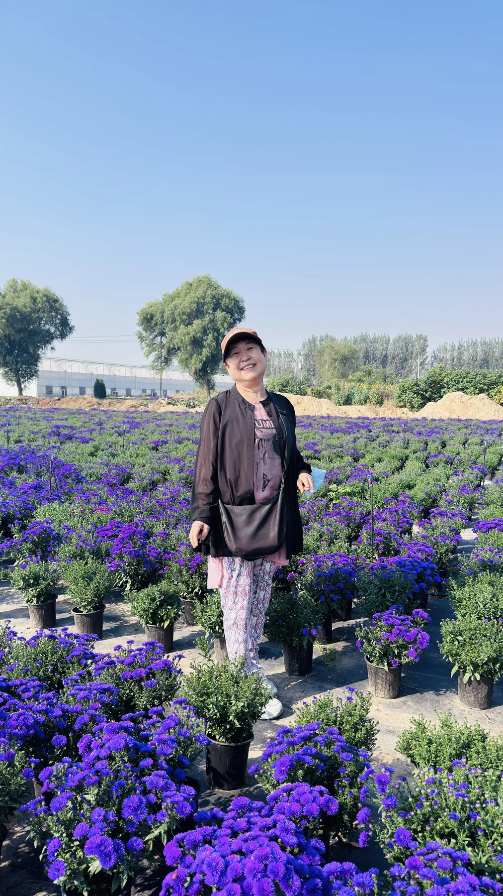
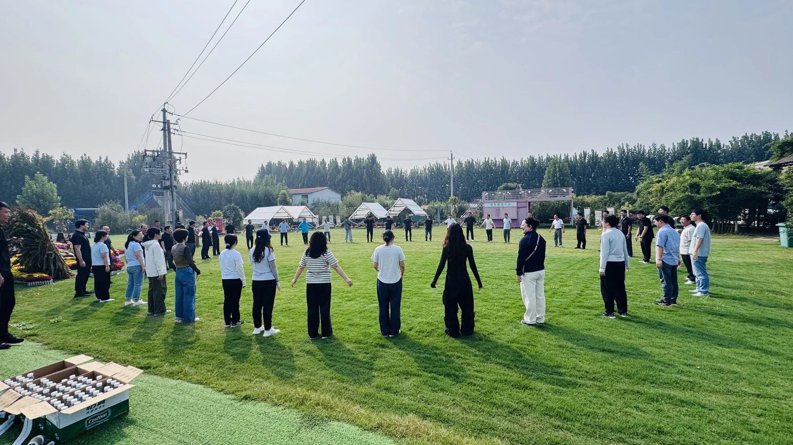
不是先讲复杂流程，而是先把能玩的项目摆在眼前。你可以按“谁一起来”，也可以按“今天想玩什么”来选。

团队 · 组织
走出会议室，把团队放进草地、花房和游戏场。农场可承接企业、协会、社群及各类组织活动，安排拔河、一圈到底、小鸡下蛋、毛毛虫大战等协作项目，也能把植物课程、聚餐和自由游园组合成完整的一日方案。大家在真实任务中分工、配合、打破生疏感，让团建不只热闹，更能留下共同经历。
查看团建与导师费用 →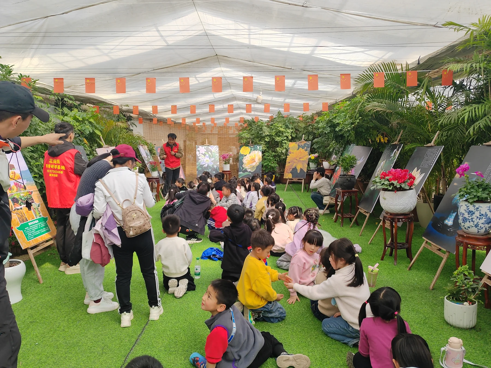
中小学 · 班级
把课本里的植物知识搬进温室与田野，让孩子通过观察、触摸、提问和动手制作认识生命。学校可按年龄与班级规模组合花卉知识讲解、植物盆栽、扦插、拓印、花海巡游和萌宠观察等内容。课程强调看得见、做得到、能带走，也方便老师组织纪律、形成学习成果，让一次出行兼顾知识、劳动与集体体验。

全家 · 朋友
不用赶行程，也不必每个人都玩同一种项目。长辈可以赏花、聊天、拍照，孩子可以看动物、玩游乐设施，大人可以参加手作或围坐休息。花海、温室、课堂、萌宠与农家餐饮集中在一个园区里，适合全家轻松安排半日或一日活动。把“去哪儿都迁就”变成各得其乐，最后再一起吃顿热乎饭。
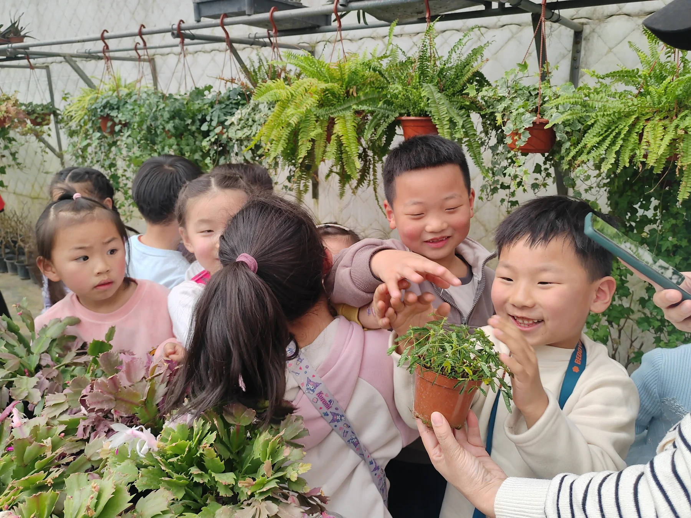
亲子 · 成长
比“带孩子来看一看”更重要的是和孩子一起做一件事。亲子家庭可以共同认识花卉、完成盆栽或植物拓印，观察兔子、孔雀、梅花鹿等动物，再到户外尽情玩耍。家长不只是陪同者，也是探索伙伴。孩子在动手和表达中建立自信，大人在共同完成作品的过程中，看见孩子平时不容易展现的好奇与专注。
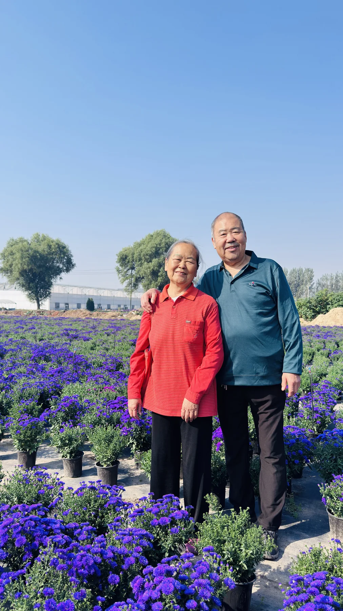
银发 · 社群
花草带来的松弛感，很适合老朋友一起慢慢体验。银发团队可以赏花打卡、参观温室、学习日常养花方法，也可以选择盆栽、插花、拓印等节奏舒缓的园艺活动。现场还可结合棋牌、K歌和团体餐饮，让活动既有内容又不赶时间。适合社区、老年大学、协会和家庭长辈结伴出游，轻松交流、自然社交。
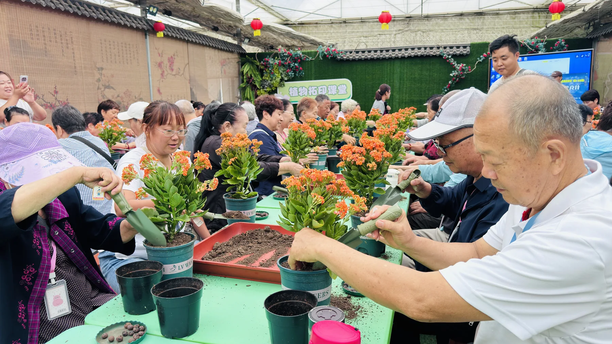
认识植物 · 动手种植
依托绿万家多年花卉生产与观赏园艺经验，课堂从“这是什么花”继续讲到“它怎样生长、怎样照顾”。参与者可以认识常见花卉，学习盆栽、扦插、日常养护与花材搭配，并把完成的作品带回家继续观察。课程可服务儿童、成人、亲子和团队，不追求背术语，而是让每个人通过一次动手，真正理解植物与生活的关系。
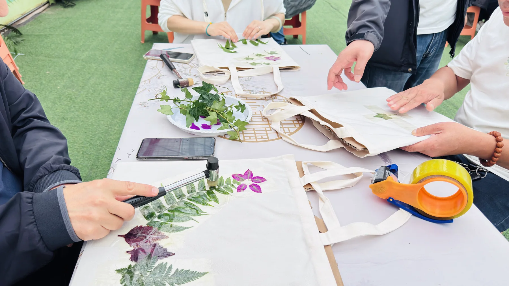
自然手作 · 作品带走
从园中选择形态不同的叶片与花材，观察纹理、排列构图，再把植物的脉络留在手绢或挎包上。拓印既是美术创作，也是一次细致的自然观察：同一片叶子因力度、颜色和位置不同，会形成完全不同的作品。儿童可以训练专注与审美，成人也能在敲印和搭配中放松下来。完成后把作品带走，让自然成为可保存的纪念。
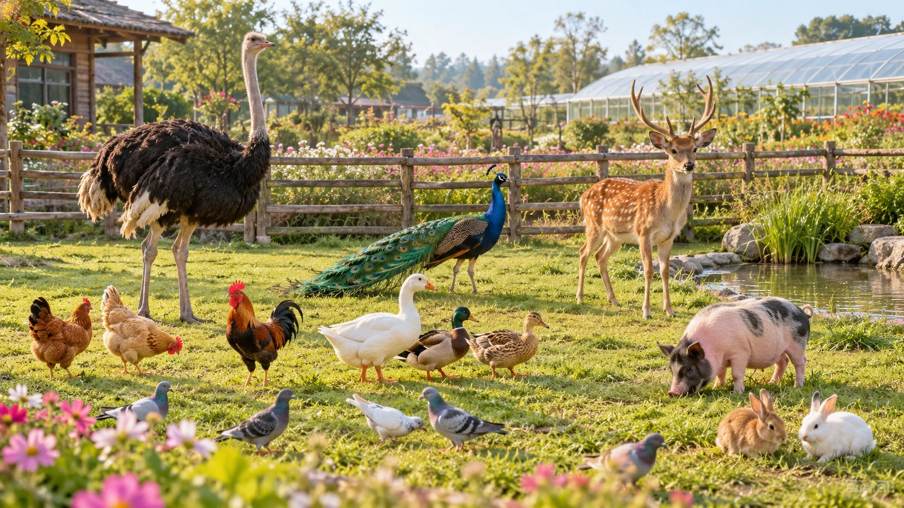
AI 场景示意动物观察 · 生命教育
在田园里认识一群不只出现在绘本中的动物朋友：鸵鸟、孔雀、梅花鹿、鸡鸭鹅、小猪、鸽子和兔子。孩子可以观察它们的外形、叫声、进食和活动习惯，在近距离接触中建立对生命的尊重。萌宠项目以现场开放区域和工作人员安排为准，互动时请遵守喂养与安全规则；免费体验也可能受天气、动物状态和场地安排影响。
赏花 · 拍照 · 散心
沿着花田慢慢走，不需要复杂动作，颜色和阳光就是最好的背景。这里适合情侣、朋友、家庭和银发游客留下自然合影，也适合一个人来吹吹风、看看花。不同季节、花期和生产安排会带来不同景观，页面照片记录的是农场真实花卉场景，但不承诺每天保持同样花量。出发前可先加微信咨询当期观赏情况与拍照建议。
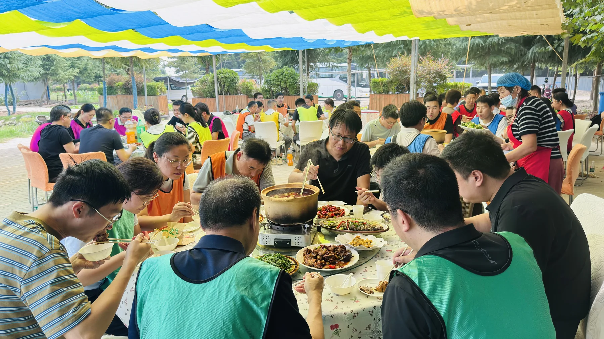
农家味 · 团体餐
玩累之后，一桌热菜最能把大家重新聚在一起。农场提供四菜一汤盒饭、八凉八热桌餐、地锅鸡、羽衣甘蓝饺子宴、菌汤砂锅土鸡、大锅菜等不同规模的餐饮选择，也可参加包羽衣甘蓝饺子体验。家庭、班级、企业和组织团队都能按人数与预算搭配。团体餐和特色餐建议提前预约，具体出餐与食材以现场确认为准。
查看完整餐饮价格 →WHO IS IT FOR?
绿万家花妈妈生态游乐农场，延续着郑州绿万家园艺有限公司二十余年的园艺积累。
企业介绍资料载明：郑州绿万家园艺有限公司成立于2003年，位于荥阳高村乡史坊村，占地约300亩，总投资4000万元，建有现代化连栋温室60000㎡，培育凤梨、龟背竹、红掌、波斯顿蕨、常春藤、长寿花、室外菊花等三十余种花卉，资料记载年产盆栽220万盆、营业额1500万元。
创始人崔继梅毕业于西北农林大学观赏园艺专业。她带领团队把多年花卉生产经验继续延伸到自然科普、家庭园艺、研学、亲子和生态休闲，希望让园艺不只是生产和观赏，更成为可以参与、可以带回家的生活方式。
说明：基地规模、产量、营业额等数据来自企业历史介绍资料，用于说明发展背景，不作为2026年实时经营数据承诺。
 企业介绍资料 · 点击查看原图 ↗
企业介绍资料 · 点击查看原图 ↗
规划方向把播种、管理、收获带来的真实体验，与家庭休闲、园艺疗愈、自然教育和现代生态农业结合起来。在经营现有项目的基础上，农场希望继续发挥交通、生产经验与现代温室条件，让经济、生态和社会价值形成良性循环，打造郑州周边具有现代农业特色的体验目的地。
该内容呈现企业规划方向，不代表所有规划项目均已建成开放。以下均为农场真实活动照片：团队游戏、植物课堂、自然手作、花海合影和围桌聚餐。
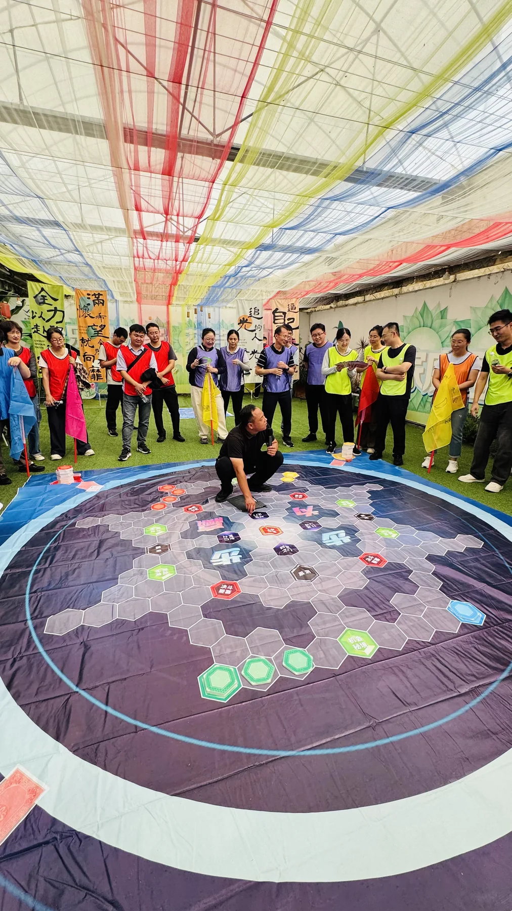
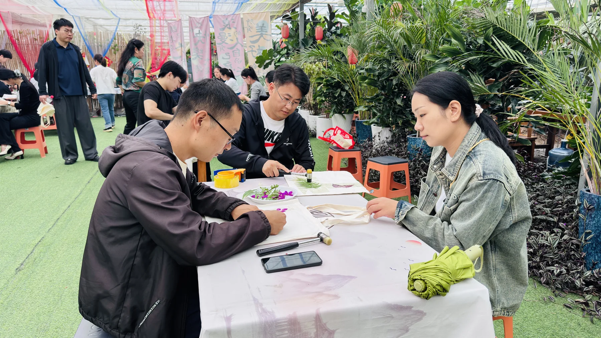
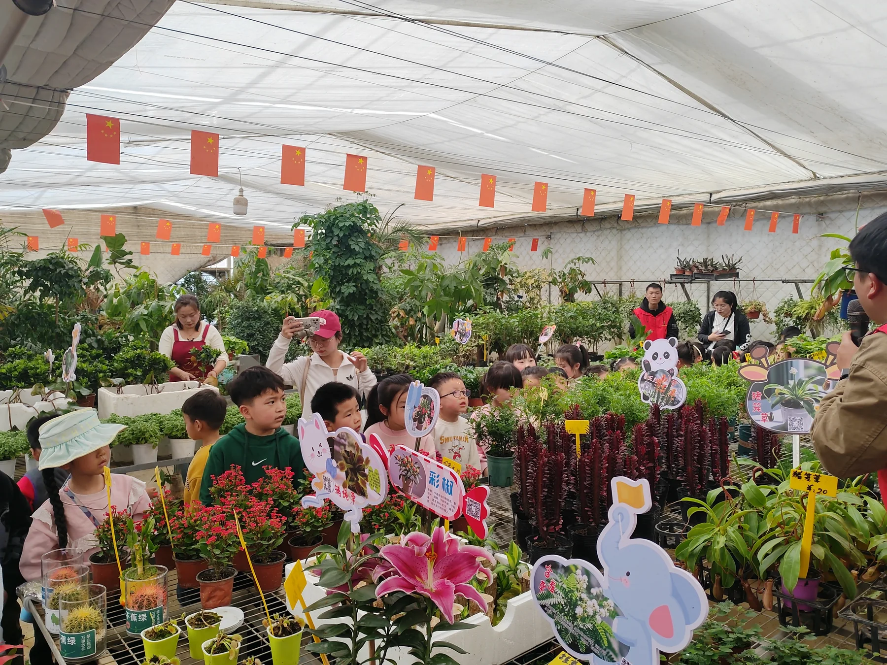
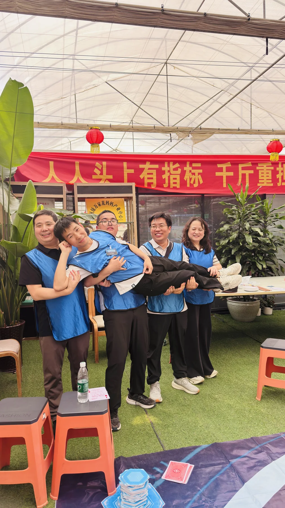
花期、天气、动物状态和团体用餐都会影响当天体验。先告诉我们“什么时候来、多少人、想玩什么”，更容易安排。
先问当天花期、开放项目和天气情况，再按兴趣选择花海、萌宠、游乐或手作。
查看地址与联系方式 →预约时说明日期、人数、年龄构成和预计时长，便于组合课程、导师、游戏与餐饮。
桌餐、地锅鸡、饺子宴和大锅菜建议提前确认人数与出餐时间，避免临时等待。
查看餐饮价格 →保留农场已提供的准确项目价格与计价单位。团体、课程与餐饮安排建议提前微信确认。
价格依据农场提供的项目表整理。部分课程、团餐、活动请提前咨询；实际开放项目可能受天气、花期、动物状态及现场安排影响。
荣誉名称和期限按农场提供的现场照片中可辨认信息整理，点击图片可查看原始资料。
照片所示认定期限：2024—2028年
照片所示认定期限：2023—2027年
荣誉墙展示相关校外实践教学和劳动教育授牌
荣誉墙展示花卉生产产教融合实训基地授牌
部分历史授牌已有明确有效期，例如“郑州市林业产业化重点龙头企业（2023—2025年）”，页面仅作历史荣誉展示，不代表2026年仍处于有效期；各项认定以颁发机构最新文件为准。
不确定当天适不适合来，直接微信说明日期和人数即可。
不一定。花期、天气、动物状态和现场活动安排都会影响体验项目，建议出发前确认当天开放情况。
团体、课程和餐饮建议提前预约；家庭散客也建议先问当期花期、开放项目和到场时间，减少空跑或等待。
页面“项目与价格”已单列免费游玩项目。实际开放仍以当天现场安排为准，付费课程和餐饮可按需选择。
可以把赏花、萌宠、休闲游乐、手作和餐饮拆开组合。预约时说明年龄构成和体力情况，便于选择节奏更合适的项目。
家庭出游、学校研学、组织团建和团体用餐，建议提前微信说明日期、人数、年龄构成和想体验的项目，我们会更容易帮你安排。